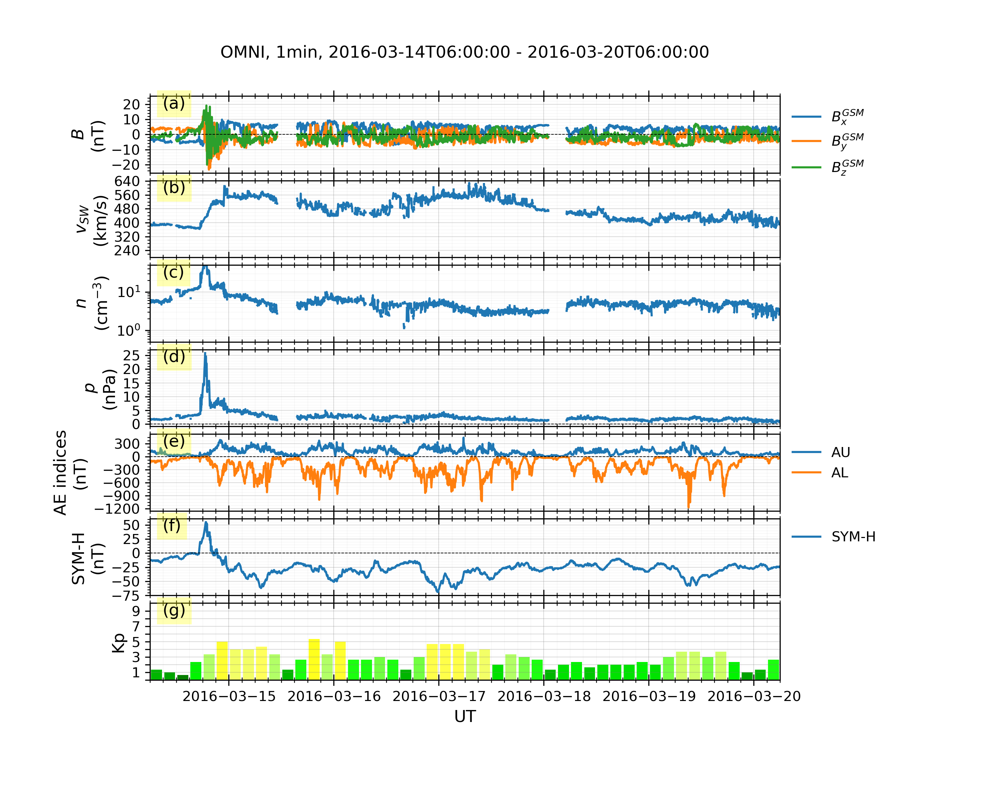
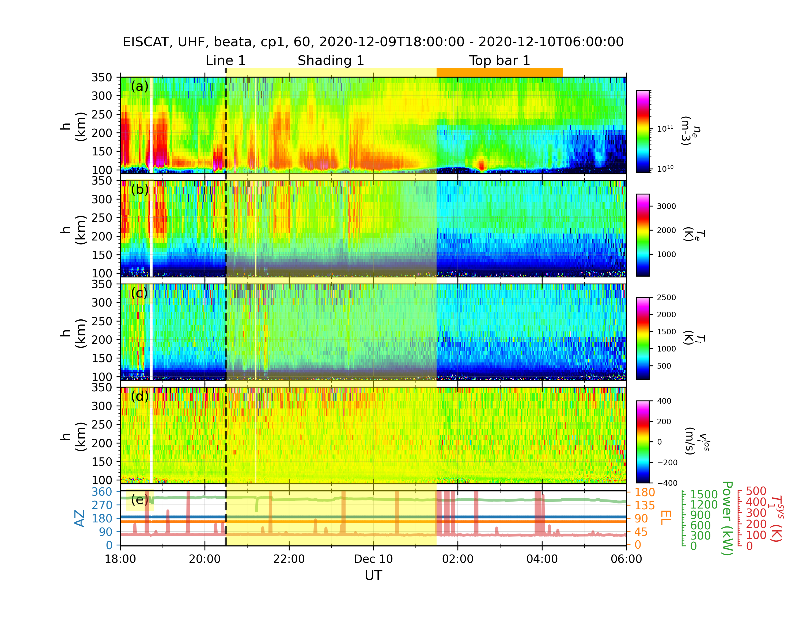

Quick Start
This page will show some examples to load a sourced dataset or to make quicklook plots. For more details, please refer to the user manual.
More examples can be found here.
Use the Datahub and Dock a Dataset
The example below shows how to dock a sourced dataset (Madrigal/EISCAT data) to a datahub. Please refer to the list of the data sources for loading other geospace data.
Use the Time-Series Viewer and Create a Figure
Add Indicators
Use the Geomap Viewer and Create a Map
Use the Express Viewer and Create a Figure
The quicklook plots are produced by the method “quicklook” of a viewer,
which is custom-designed for a data source. Those specialized viewer can be imported
from geospacelab.express. The two examples below show the solar wind and geomagnetic
indices, as well as the EISCAT data, respectively.
Solar Wind and Geomagnetic Indices from OMNI and WDC
Solar wind and geomagnetic indices data
examples/demo_omni_data.pyimport datetime import geospacelab.express.omni_dashboard as omni dt_fr = datetime.datetime.strptime('20160321' + '0600', '%Y%m%d%H%M') dt_to = datetime.datetime.strptime('20160330' + '0600', '%Y%m%d%H%M') omni_type = 'OMNI2' omni_res = '1min' load_mode = 'AUTO' dashboard = omni.OMNIDashboard( dt_fr, dt_to, omni_type=omni_type, omni_res=omni_res, load_mode=load_mode ) # data can be retrieved in the same way as in Example 1: dashboard.list_assigned_variables() B_x_gsm = dashboard.get_variable('B_x_GSM', dataset_index=1) # Omni dataset index is 1 in the OMNIDashboard. To check other dashboards, use the method "list_datasets()" print(B_x_gsm) dashboard.quicklook() # save figure dashboard.save_figure()
Output:

EISCAT from Madrigal with Marking Tools
examples/demo_eiscat_quicklook.py1import datetime 2import geospacelab.express.eiscat_dashboard as eiscat 3 4dt_fr = datetime.datetime.strptime('20201209' + '1800', '%Y%m%d%H%M') 5dt_to = datetime.datetime.strptime('20201210' + '0600', '%Y%m%d%H%M') 6 7site = 'UHF' 8antenna = 'UHF' 9modulation = '60' 10load_mode = 'AUTO' 11dashboard = eiscat.EISCATDashboard( 12 dt_fr, dt_to, site=site, antenna=antenna, modulation=modulation, load_mode='AUTO' 13) 14dashboard.quicklook() 15 16# dashboard.save_figure() # comment this if you need to run the following codes 17# dashboard.show() # comment this if you need to run the following codes. 18 19""" 20As the viewer is an instance of the class EISCATViewer, which is a heritage of the class Datahub. 21The variables can be retrieved in the same ways as shown in Example 1. 22""" 23n_e = dashboard.assign_variable('n_e') 24print(n_e.value) 25 26""" 27Several marking tools (vertical lines, shadings, and top bars) can be added as the overlays 28on the top of the quicklook plot. 29""" 30# add vertical line 31dt_fr_2 = datetime.datetime.strptime('20201209' + '2030', "%Y%m%d%H%M") 32dt_to_2 = datetime.datetime.strptime('20201210' + '0130', "%Y%m%d%H%M") 33dashboard.add_vertical_line(dt_fr_2, bottom_extend=0, top_extend=0.02, label='Line 1', label_position='top') 34# add shading 35dashboard.add_shading(dt_fr_2, dt_to_2, bottom_extend=0, top_extend=0.02, label='Shading 1', label_position='top') 36# add top bar 37dt_fr_3 = datetime.datetime.strptime('20201210' + '0130', "%Y%m%d%H%M") 38dt_to_3 = datetime.datetime.strptime('20201210' + '0430', "%Y%m%d%H%M") 39dashboard.add_top_bar(dt_fr_3, dt_to_3, bottom=0., top=0.02, label='Top bar 1') 40 41# save figure 42dashboard.save_figure() 43# show on screen 44dashboard.show()
Output:

DMSP/SSUSI auroral images
examples/demo_dmsp_ssusi_single_panel.py1import datetime 2import matplotlib.pyplot as plt 3 4import geospacelab.visualization.mpl.geomap.geodashboards as geomap 5 6 7def test_ssusi(): 8 dt_fr = datetime.datetime(2015, 9, 8, 8) 9 dt_to = datetime.datetime(2015, 9, 8, 23, 59) 10 time1 = datetime.datetime(2015, 9, 8, 20, 21) 11 pole = 'N' 12 sat_id = 'f16' 13 band = 'LBHS' 14 15 # Create a geodashboard object 16 dashboard = geomap.GeoDashboard(dt_fr=dt_fr, dt_to=dt_to, figure_config={'figsize': (5, 5)}) 17 18 # If the orbit_id is specified, only one file will be downloaded. This option saves the downloading time. 19 # dashboard.dock(datasource_contents=['jhuapl', 'dmsp', 'ssusi', 'edraur'], pole='N', sat_id='f17', orbit_id='46863') 20 # If not specified, the data during the whole day will be downloaded. 21 dashboard.dock(datasource_contents=['jhuapl', 'dmsp', 'ssusi', 'edraur'], pole=pole, sat_id=sat_id, orbit_id=None) 22 ds_s1 = dashboard.dock( 23 datasource_contents=['madrigal', 'dmsp', 's1'], 24 dt_fr=time1 - datetime.timedelta(minutes=45), 25 dt_to=time1 + datetime.timedelta(minutes=45), 26 sat_id=sat_id) 27 28 dashboard.set_layout(1, 1) 29 30 # Get the variables: LBHS emission intensiy, corresponding times and locations 31 lbhs = dashboard.assign_variable('GRID_AUR_' + band, dataset_index=1) 32 dts = dashboard.assign_variable('DATETIME', dataset_index=1).value.flatten() 33 mlat = dashboard.assign_variable('GRID_MLAT', dataset_index=1).value 34 mlon = dashboard.assign_variable('GRID_MLON', dataset_index=1).value 35 mlt = dashboard.assign_variable(('GRID_MLT'), dataset_index=1).value 36 37 # Search the index for the time to plot, used as an input to the following polar map 38 ind_t = dashboard.datasets[1].get_time_ind(ut=time1) 39 lbhs_ = lbhs.value[ind_t, :, :] 40 mlat_ = mlat[ind_t, ::] 41 mlon_ = mlon[ind_t, ::] 42 mlt_ = mlt[ind_t, ::] 43 # Add a polar map panel to the dashboard. Currently the style is the fixed MLT at mlt_c=0. See the keywords below: 44 panel1 = dashboard.add_polar_map(row_ind=0, col_ind=0, style='mlt-fixed', cs='AACGM', mlt_c=0., pole=pole, ut=time1, boundary_lat=65., mirror_south=True) 45 46 47 # Some settings for plotting. 48 pcolormesh_config = lbhs.visual.plot_config.pcolormesh 49 # Overlay the SSUSI image in the map. 50 ipc = panel1.overlay_pcolormesh(data=lbhs_, coords={'lat': mlat_, 'lon': mlon_, 'mlt': mlt_}, cs='AACGM', **pcolormesh_config) 51 # Add a color bar 52 panel1.add_colorbar(ipc, c_label=band + " (R)", c_scale=pcolormesh_config['c_scale'], left=1.1, bottom=0.1, 53 width=0.05, height=0.7) 54 55 # Overlay the gridlines 56 panel1.overlay_gridlines(lat_res=5, lon_label_separator=5) 57 58 # Overlay the coastlines in the AACGM coordinate 59 panel1.overlay_coastlines() 60 61 # Overlay cross-track velocity along satellite trajectory 62 sc_dt = ds_s1['SC_DATETIME'].value.flatten() 63 sc_lat = ds_s1['SC_GEO_LAT'].value.flatten() 64 sc_lon = ds_s1['SC_GEO_LON'].value.flatten() 65 sc_alt = ds_s1['SC_GEO_ALT'].value.flatten() 66 sc_coords = {'lat': sc_lat, 'lon': sc_lon, 'height': sc_alt} 67 68 v_H = ds_s1['v_i_H'].value.flatten() 69 panel1.overlay_cross_track_vector(vector=v_H, unit_vector=1000, alpha=0.5, color='r', sc_coords=sc_coords, sc_ut=sc_dt) 70 # Overlay the satellite trajectory with ticks 71 panel1.overlay_sc_trajectory(sc_ut=sc_dt, sc_coords=sc_coords, cs='GEO') 72 73 # Add the title and save the figure 74 polestr = 'North' if pole == 'N' else 'South' 75 panel1.add_title(title='DMSP/SSUSI, ' + band + ', ' + sat_id.upper() + ', ' + polestr + ', ' + time1.strftime('%Y-%m-%d %H%M UT')) 76 plt.savefig('DMSP_SSUSI_' + time1.strftime('%Y%m%d-%H%M') + '_' + band + '_' + sat_id.upper() + '_' + pole, dpi=300) 77 78 # show the figure 79 plt.show() 80 81 82if __name__ == "__main__": 83 test_ssusi()
Output: